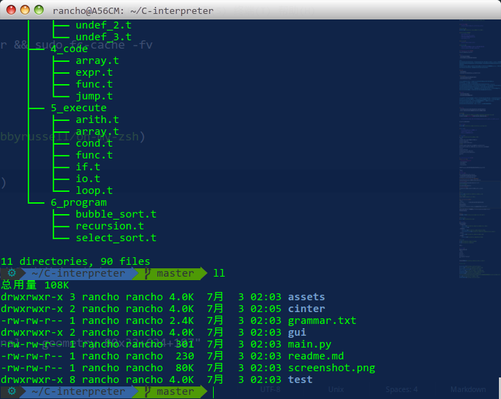
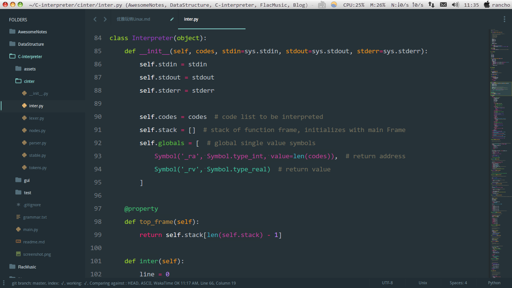
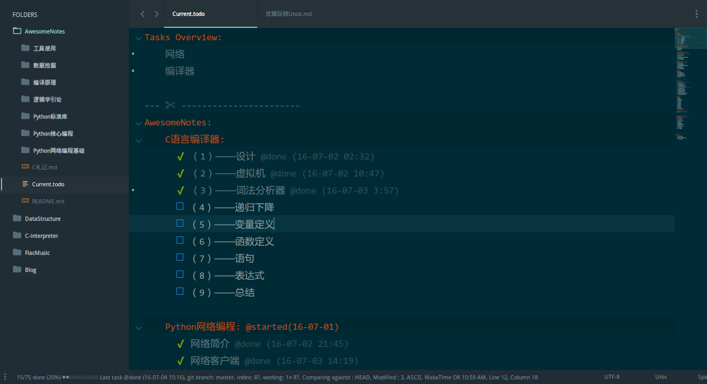

前言
个人的Linux捣腾经历要从大一开始， 但在大一后暑假通读了《Linux私房菜》之后才渐渐步入正规
本文只是总结性地罗列了一些常用工具配置, 如果你才上手Linux或者遇到什么问题, 欢迎留言
各发型版相比较而言， ArchLinux就像初恋一样， 充满了很多可能和新奇， 每一天都会是新鲜的。 而主打桌面的Ubuntu则更像贤妻良母(简单易上手).
下面就从界面美化, 硬件性能, 开发环境 三方面
基本篇: 基本的配置和工具
双系统的八小时时差
sudo vim /etc/default/rcS
utc=no # 注释掉
然后记得自动挂载常用的windows分区
CPU频率
sudo add-apt-repository ppa:atareao/atareao
sudo apt-get install indicator-cpufreq
系统监控
sudo add-apt-repository ppa:fossfreedom/indicator-sysmonitor
sudo apt-get update
sudo apt-get install indicator-sysmonitor
电源管理 TLP
sudo add-apt-repository ppa:linrunner/tlp
sudo apt-get update
sudo apt-get install tlp tlp-rdw
sudo tlp start
校园网必备
OpenKeeper
开无线
chrome
wget https://dl.google.com/linux/direct/google-chrome-stable_current_amd64.deb
sudo dpkg -i google-chrome-stable_current_amd64.deb
flash plugin
sudo apt-get install pepperflashplugin-nonfree
sudo update-pepperflashplugin-nonfree --install
翻墙
额外的解码器
sudo apt-get install ubuntu-restricted-extras
中文输入法
用户子目录改成英文
export LANG=en_US
xdg-user-dirs-gtk-update
同意对话框询问, 然后改回中文包
export LANG=zh_CN
hg command
sudo apt-get install mercurial
更多软件源
修改软件源并且增加 Canonical Parters, 然后更新包信息
sudo apt-get update&&sudo apt-get upgrade
界面篇: 更加人性的流畅体验
Linux下可选择desktop不少
KDE
- 优点: 高度可定制, 好看
- 缺点: 组件(如kmail)对普通用户略复杂
KDE 是所有桌面环境中最易定制的，如同其他桌面环境一样你需要一些插件，小工具，配置工具来定制你的环境，KDE 把所有这些插件和工具都打包到系统设置里面。有了高级配置管理器，所有用户需求都可以被定制而不需要任何三方工具来美化和配置。
伴随着许多改进，KDE 的 Plasma5 算得上是最先进的 DE，它主要专注于视觉体验(更好的 launcher，菜单以及通知)和不同设备之间的易用性。Plasma 与老的或低配的硬件也更快更兼容
MATE
- 优点: 轻量级
- 缺点: 基于已不再维护的Gnome2的某个分支?
Cinnamon
- 优点: 极致优美, 上手简单, 高度可定制
- 缺点: 年轻, 还有一些Bug
Cinnamon 是继 MATE 之后，Linux Mint Team 为那些看不惯 Gnome 的用户创建基于 Gnome 3 的桌面环境。Cinnamon 很新，开发非常活跃
Cinnamon 具有像 Gnome 和 Unity 这样的桌面环境所不具备的所有功能。Cinnamon 是个高度可定制的桌面环境，并且不需要任何额外的插件、小工具和配置工具来定制桌面。Cinnamon 可以通过内置的配置管理器下载并安装主题，完全不需要打开网络浏览器。
通过这些惊艳的和必备的功能，Cinnamon 对任何 Linux 新用户来说都非常方便。
Gnome
- 优点: 元老级, 你懂的
- 缺点: 插件管理弱爆, 特性很少
Gnome 的第一个发布版本是在 1999 年, 提供了一个简单和经典的桌面体验，它没有足够的自定义选项。但是在 2011 年 Gnome 介绍了新的设计 GNOME 3，传统的桌面环境已经被 GNOME Shell 替代。这次终结引起了 Gnome 用户和很多开发者的不满，这种不满导致许多其他 DEs 被创造出来，例如 MAT E和 Cinnamon。
Gnome 是 Fedora 的默认桌面环境，在几个流行的 Linux 发行版中都可以见到她的身影，例如，Ubuntu，Debian，OpenSUSE 和更多的发行版。
Unity
- 优点: 直观, 类似 HUD 的新技术, 通过第三方应用支持自定义
- 缺点: ,丑陋实现的通知功能, 非常有限的自定义工具, 前后矛盾的 UI
苹果风
Mac主题
替换Ubuntu桌面: 中文路径对应 zh_CN
cd /usr/share/locale/zh_CN/LC_MESSAGES; sudo msgfmt -o unity.mo ~/Mac.po;rm ~/Mac.po;cd
Docky 个人感觉很鸡肋
亮度调节
绿色护眼
cd /usr/share/themes/_THEME/gtk-3.0
sudo gedit gtk-main.css
把base_color 设置成 #CCE8CF
色温神器
sudo add-apt-repository ppa:kilian/f.lux
sudo apt-get update
sudo apt-get install fluxgui
或者
sudo apt-get install python-glade2 python-appindicator
git clone https://github.com/Kilian/f.lux-indicator-applet.git flux
cd flux
chmod +x setup.py
sudo python ./setup.py install
sudo chmod 755 /usr/local/bin/xflux
fluxgui
开发篇: 迈向大牛的基本阶梯
首先, 关于字体
- YaHei Consolas Hybrid
- Source Code Pro
- Andale Mono
- Inconsolate
习惯了Consolas但很可惜的是渲染效果没windows下好
|
|
zsh
oh-my-zsh
力荐主题: agnoster

修改终端的默认位置
$ xwininfo 并单击终端以获取当前窗口信息
$ vim ~/.zshrc
添加启动参数
alias gnome-terminal="gnome-terminal --geometry 80x32+624+187"
当然, 也可以新建一个快捷键(System -> Preferences -> keyboard Shortcuts)
然后把它放进去
调教一下
# 别名设置
# 比如刚才的终端位置就可以这样
alias gnome-terminal="gnome-terminal --geometry 80x32+630+222"
# 终端打开图形化文件管理器
alias xdir="xdg-open ."
# 再比如, 后台启动 lantern 并丢弃输出
alias lantern="nohup lantern > /dev/null &"
# nohup 默认会把输出定位到 nohup.out
Vim
这里有练级攻略
WakaTime
Sublime Text
先晒图

关于插件网上满地都是, 我就不赘述了
这里挑几个罗列下
- 主题和配色: 我的改过
- Material
- Color-Scheme
- 提高效率
- SublimeTmpl
- Sidebar Enhancements
- Python
- Anaconda
- 特别是
- PlainTasks

- PlainTasks
Nodejs
CMAKE
CMAKE 选择你要的版本并下载
wget http://www.cmake.org/files/v3.5/cmake-3.x.x.tar.gz # 或者直接点击下载
tar xvf cmake-3.x.x.tar.gz
cd cmake-3.x.x
./configure
make # 加上 -j4 可以多线程编译 (CPU核数两倍为宜, 并非越多越好)
sudo make install
等等..
关于备份
有的人会这么做
cd /etc
git init
git add ./*
git commit -m “backup”
也有这样的备份